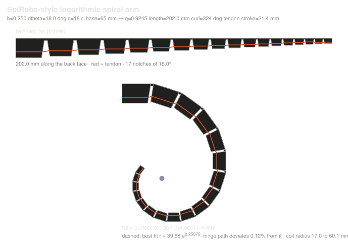

Self-similar by design
Every segment is a scaled copy of the one before it, shrinking by the same ratio each time. Close all the notches and the arm traces a logarithmic spiral, which is the one curve that looks identical at every scale.
Built by Eben Siyabalapitiya
Tendril is a printed tentacle that curls into a logarithmic spiral when you pull a single tendon. Because the spiral is self-similar, the tip closes small and the base closes wide at the same time, so one arm grabs a marble or a bottle without changing anything.
Status: second prototype printed and closing by hand
Demo video goes here
dropdemo.mp4 into /media
Every segment is a scaled copy of the one before it, shrinking by the same ratio each time. Close all the notches and the arm traces a logarithmic spiral, which is the one curve that looks identical at every scale.
A single line runs from the base to the tip. Pull it and the arm curls from the tip inward, so it conforms to whatever it hits instead of needing to know what it is holding.
No hinges to assemble and nothing to bolt together. Thin ligaments on the back face act as living hinges and as the spring that straightens the arm again when the tendon releases.
The idea
A normal gripper has a size it is good at. Jaws that hold a bottle crush a marble, and jaws sized for a marble cannot reach around a bottle.
A logarithmic spiral, r = a·e^(b·θ), does not have a size. Rotate it and you get the same curve, just scaled. So if the arm curls into that shape, it is small near the tip and large near the base at the same moment, and the object picks the part of the arm that fits it.
Getting there is mostly bookkeeping. Each segment shrinks by a fixed ratio q = e^(−b·Δθ), and every joint gets a V-notch of exactly Δθ. When all the notches shut, the back face lands on the spiral. With the numbers Tendril uses, the folded shape sits within 0.12% of a true spiral.
The tendon runs through a channel inside each segment, offset toward the inner face. That offset is the lever arm. Pull, and every notch closes at once, tip first because there is less material resisting there.

At a glance
The current parameter set. All of it comes out of the generator, so changing one number rewrites the rest.
Build log
The paper makes this look like a shape problem. Most of the work so far has been everything the shape does not tell you.
Drawing 18 segments by hand was never going to work, since changing the spiral constant changes every single one. So the arm is a script. It writes the mesh, a flat profile for CAD, and a build sheet with every dimension in it.
 photo —
photo — media/log-generator.jpg
There is no boolean kernel in a few hundred lines of plain Python, so the channel could not be cut out of a solid. The arm is built instead as a set of abutting closed shells with the gap already between them, and a separate script ray-casts the finished file to prove every edge is used twice and no volume is inside out.
 photo —
photo — media/log-channel.jpg
First print curled fine for a few pulls, then broke at the bottom segment. Obvious in hindsight. The base hinge carries every notch above it, so all the tension in the line ends up concentrated in the thinnest bit of material at the very bottom, and the sharp inside corner of the notch is exactly where a crack wants to start.
 photo —
photo — media/log-break.jpg
Went back and read how other soft and tendon-driven arms deal with this, and it is the same answer everywhere: never leave a sharp corner where the load is. So I put a much larger fillet in the root of each notch, biggest at the base where the load is highest. Same geometry, same spiral, the stress just has somewhere to spread out instead of piling into one line. Second print has not broken.
 photo —
photo — media/log-fillet.jpg
Pulling a bare line with your fingers is awkward and you cannot feel how far you have gone. I tied a ring on each end instead, one to close and one to open, so each direction gets its own finger and the whole arm is controllable by hand. It also made testing much faster, since there is no servo to re-home every time something changes.
 photo —
photo — media/log-rings.jpg
Next. A 10 mm spool on a standard horn covers the 21.4 mm of stroke in about a 120° sweep. The open question is whether the living hinges spring back hard enough on their own, or whether it needs an elastic cord down the middle to straighten out.
 photo —
photo — media/log-servo.jpg
Prints, failures and whatever else is worth showing.
 photo —
photo — media/gallery-1.jpg photo —
photo — media/gallery-2.jpg photo —
photo — media/gallery-3.jpg photo —
photo — media/gallery-4.jpgWhere this is going
Tendril runs through all three. This page is phase one, and the other two get added here as they happen.
Rebuild someone else's work and find out what the paper leaves out. Reproduce the SpiRobs spiral gripper, print it, break it, fix it, close it by hand.
Take the working reproduction and push on it. Change the parameters, test what actually holds, and make it better than the version I copied.
Use what the first two taught me to build something that is mine.
Credit where it is due
The design principle is not mine. It comes from SpiRobs: Logarithmic spiral-shaped robots for versatile grasping across scales by Zhanchi Wang, Nikolaos Freris and Xiaobo Wei, published in Device in 2024. I rebuilt it to find out what the paper leaves out, which turned out to be most of the manufacturing.
The geometry generator, the mesh checker and this site are mine. Everything is open.